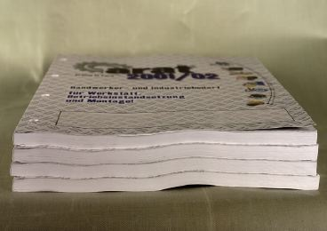
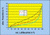
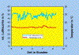
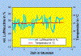
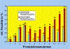
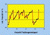
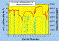

WELLENBILDUNG IM BUCHBLOCK
|
Nahezu typisch für die im Rollenoffset
gedruckten Buchblöcke ist eine mehr oder
minder starke Wellenbildung an den Schnittkanten
(Abb. 1 und Abb. 2). Die Welligkeit im Buchblock
kann so stark ausfallen, dass sich bei der Pressung
der Buchblöcke, die nach dem Einhängen in
die Buchdecke notwendig wird, kein bzw. nur ein
geringer Kontakt zwischen Vorsatzpapier und
Buchdecke herstellen lässt . Die Folge davon
sind Ablöseerscheinungen in den Bereichen des
Vorsatzes, an denen keine Pressung erfolgte.
|

|
Abb.1: Wellenbildung an den Schnittkanten.
|
|
|
|
Mögliche Ursachen:
|
|
|
|
Abb.2: Wellenbildung an den Schnittkanten.
|
|
|
|

|
|
Abb.3: Adsorptionsisotherme eines
Rollenoffsetpapiers.
|
|
|
|

|
|
Abb.4: Raumfeuchte im Sommer.
|
|
|
|

|
|
Abb.5: Raumfeuchte im Winter.
|
|
|
|

|
|
Abb.6: Minimale und maximale Rollenfeuchte bei
12 unterschiedlichen Produktionen.
|
|
|
|

|
|
Abb.7: Feuchteschwankungen im
Falzbogenstapel.
|
|
|
|
|
|
Abb.8: Feuchteschwankungen im Falzbogenstapel
durch falsche Lagerung.
|
|
|
|

|
|
Abb.9: Feuchtemessung über der
Papierbahn.
|
|
|
|
|
Papier ist aufgrund seiner hygroskopischen Bestandteile
Zellstoff und Holzschliff bestrebt, die Feuchte seiner
Umgebung durch Adsorption bzw. Desorption aufzunehmen bzw.
abzugeben. Diese Vorgänge werden anhand der sog.
Sorptionsisothermen dargestellt, die den Wassergehalt
(Feuchtebeladung) eines Papiers in Abhängigkeit der
Temperatur und der rel. Luftfeuchte aufzeigen.
Diese Sorptionsisothermen nehmen für jedes Papier einen
eigenen Verlauf, jedoch ist ihre Form bei allen Papieren
ähnlich. Die Adsorptionskurve beschreibt dabei die
Feuchtezunahme eines ursprünglich trockenen Papiers bei
sukzessiv ansteigender rel. Luftfeuchte (Abb. 3). Die
Desorptionsisotherme beschreibt analog die Entwicklung bei
sinkender rel. Luftfeuchte.
Wird das Papier einem anderen Umgebungsklima ausgesetzt, so
beginnt ein Ausgleichsvorgang durch Wasserdampfdiffusion,
der solange andauert, bis der neue Gleichgewichtszustand
erreicht ist.
Ein derartiger Vorgang stellt sich auch beim Lauf des
Papiers durch den Rollenoffsettrockner ein. Durch die
Prallstrahlschwebedüsen wird Luft mit Temperaturen von
180 °C bis 300 °C und mit Geschwindigkeiten von 35
m/s bis 50 m/s auf die Bahn aufgeblasen und dem Papier somit
ein hoher Wärmestrom zugeführt.
Aufgrund der übermäßigen Austrocknung des
Papiers ist nach dem Trocknerdurchlauf in manchen
Fällen nur noch eine Restfeuchtebeladung von <1,5 %
bis 2 % abs. Feuchte in den Papieren festzustellen. Durch
die Trocknung und die damit einhergehende Faserschrumpfung
werden im Mikrobereich der Fasern - vor allem in den
Hemicellulosen - und im Makrobereich - der fibrillären
Struktur der Faserwand - zum Teil irreversible Spannungen
aufgebaut .
Während der Adsorptionsphase im Falzbogenstapel bzw. im
Buchblock kommt es infolge der Feuchteaufnahme über die
Schnittkanten, des damit einhergehenden Aufquellens der
Fasern und der im Buchblock auftretenden Spannungen zur
Wellenbildung im Buchblock.
Langzeitmessungen der FOGRA in verschiedenen
Produktionsräumen wie Papierlagern,
Druckmaschinenräumen, Zwischenlagern und
Buchbindereiräumen zeigten, dass während des
Sommerhalbjahres mit relativ hohen Feuchtewerten von 45 %
bis 55 % rel. Luftfeuchte in nahezu allen
Fertigungsräumen zu rechnen ist (Abb. 4). Zwischen den,
aus dem Rollenoffset kommenden, trockeneren Buchblöcken
und der weitaus höheren Umgebungsfeuchte kommt es
dadurch in der Regel zu einer raschen Feuchteaufnahme in den
Randbereichen der Buchblöcke und damit zur
möglichen Wellenbildung im Buchblock. Reklamationen zur
Wellenbildung im Buchblock werden daher - infolge der hohen
Feuchtedifferenzen zwischen Buchblock und Raumklima -
verstärkt in den Frühlings- und Sommermonaten
registriert.
Während des Winterhalbjahres herrschen durch beheizte
Produktionsräume entsprechend niedrigere
Luftfeuchtewerte im Raumklima. Die Werte liegen dabei im
Schnitt zwischen 20 % und 35 % rel. Luftfeuchte (Abb. 5) und
entsprechen in etwa den Feuchtewerten von
rückbefeuchteten Rollenoffsetprodukten. Aufgrund der
weitaus geringeren Raumluftfeuchte kommt es in den
Wintermonaten zu einer geringfügigeren Feuchtediffusion
an den Schnittkanten der Buchblöcke und damit verbunden
zu einem weitaus besseren Planlageverhalten der
Buchblöcke.
Für die Bewertung eines Produktes bezüglich
Planlage bestehen keine verbindlichen Toleranzen. Die Frage
nach Akzeptanz von Nichtplanlage hängt von der Art und
Wertigkeit des Produkts ab.
Da die Wellenbildung oft im Zusammenspiel mit mehreren
Faktoren entsteht, können auch durchaus mehrere der
nachfolgend genannten Punkte in Kombination oder einzeln die
Wellenbildung hervorrufen bzw. verstärken.
Dies sind folgende mögliche Ursachen:
1. Zu hohe Rollenfeuchte des Papiers bei Anlieferung
2. Übermäßig starkes Querdehnverhalten des
Papiers
3. Zu hohe Zugkräfte bei der Bahnspannung
4. Ungünstige Drucksujet-Verteilung auf der
Druckform
5. Stark ungleichmäßig aufgetragene
Rückbefeuchtung
6. Ungünstige klimatische Voraussetzungen bei der
Druckweiterverarbeitung und/oder bei der Lagerung
|
Mögliche Abhilfen:
|
|
Zahlreiche Untersuchungen auf diesem Gebiet zeigten, dass
die Wellenbildung durch den Einsatz von
Rückbefeuchtungsanlagen tendenziell verringert, jedoch
nicht ganz vermieden werden kann. Messungen an Falzbogen und
auch fertigen Büchern haben gezeigt, dass sich durch
eine Rückbefeuchtung während des Druckprozesses
die relative Feuchte des Papiers auf 25 % bis 35 % rel.
Feuchte wieder anheben lässt.
Des Weiteren weiß man, dass eine nachträgliche,
langsame Reklimatisierung bei Gebrauch der Broschuren oder
Bücher auf Normalklima (ca. 50 % rel. Feuchte / 23
°C) eine deutliche Verbesserung des Planlage mit sich
bringt.
Als weitere Abhilfe- bzw. Vorsichtsmaßnahmen sind zu
nennen:
Die Heatset-Trocknereinstellung sollte über den
gesamten Fertigungszeitraum möglichst konstant gehalten
werden.
Zu hohe Zugkräfte bei der Bahnspannung sind
grundsätzlich zu vermeiden.
Gleichmäßig stark aufgetragene
Rückbefeuchtungsmengen über die gesamte Auflage
halten.
Die Verweilzeit der Papierbahn in der Trockenstrecke sollte
möglichst lang sein bei möglichst geringer
Trocknertemperatur. Daraus resultiert allerdings eine
verminderte Produktionsgeschwindigkeit.
Die Faserlaufrichtung des Papiers sollte parallel zum
Bundsteg verlaufen.
Die Rollenfeuchte des angelieferten Papiers vor Druckbeginn
sollte zwischen 40 % rel. Feuchte und 45 % rel. Feuchte
liegen.
|
Beispiel(e):
|
|
Feuchteschwankungen in angelieferten
Papierrollen:
An erster Stelle der Produktionskette steht die für den
Druckprozess so wichtige Eingangsfeuchte der angelieferten
Papierrollen, deren Feuchtegehalt im Rollenoffset
idealerweise ca. 40 % rel. Feuchte betragen sollte.
Messungen an Papierlieferungen für 12 unterschiedliche
Rollenoffsetproduktionen zeigten, dass von den untersuchten
Fertigungen lediglich 2 Auflagen mit Rollenpapieren
gefertigt wurden, die, über die ganze Auflage verteilt,
in ihren Feuchtewerten nahezu im Idealbereich von 40 % rel.
Feuchte lagen.
Bei den übrigen untersuchten Papieranlieferungen lagen
die Messwerte über die gesamte Fertigung bzw. in
Teilbereichen zwischen 31 % rel. Feuchte und 68 % rel.
Feuchte (Abb. 6).
Feuchteschwankungen im Falzbogenstapel:
Bei einer Großauflage mit Rückbefeuchtung wurden
von der FOGRA Feuchtemessungen in den Falzbogenstapeln
vorgenommen. Über einen Produktionszeitraum von 4
Wochen wurden 70 Falzbogenstapel untersucht. Trotz
sorgfältigster Fertigung während des gesamten
Herstellungsprozesses zeigten die Ergebnisse der
Untersuchungen relativ starke Schwankungen mit Werten von 22
% bis 32 % rel. Feuchte (Abb. 7). Diese Feuchteschwankungen
können zu unterschiedlich starker Wellenbildung in der
gesamten Auflage bzw. in Teilbereichen der Auflage
führen.
Feuchteschwankungen im Falzbogenstapel durch falsche
Lagerung:
Als weiterer kritischer Punkt ist die Lagerung von nicht
eingeschweißten bzw. nicht banderolierten
Falzbogenstapeln zu nennen. Messungen an offen gelagerten
Falzbogenstapeln zeigten, dass in den mittleren und unteren
Lagen Feuchtewerte von 5 % rel. Feuchte bis 15 % rel.
Feuchte vorzufinden waren, während in den oberen Lagen
des Falzbogenstapels bereits Gleichgewichtsfeuchte zwischen
Falzbogen und Raumklima erreicht war (Abb. 8).
Verarbeitungsprobleme in Form von unterschiedlichen
Laufeigenschaften der Druckbogen bei der Weiterverarbeitung
und Wellenbildung im Endprodukt Buch sind die Folge.
Empfehlenswert wäre es in diesem Zusammenhang, wenn die
zwischengelagerten Paletten generell eingeschweißt
bzw. banderoliert würden und die Bandumreifungen erst
unmittelbar vor der Weiterverarbeitung gelöst
würden.
Feuchteschwankungen bei der Rückbefeuchtung:
Bei Untersuchungen zur Feuchtemessungen über der
Papierbahn bei laufender Produktion wurde festgestellt, dass
die durch die Rückbefeuchtung aufgebrachte Wassermenge
von vielen Faktoren beeinflusst wird und mitunter
Schwankungen unterliegt.
Neben Maschinenstillstandzeiten, Anlaufzeiten und
unterschiedlichen Maschinendrehzahlen sind es vor allem
unterschiedliche Maschineneinstellungen am
Befeuchtungsaggregat, die zu Schwankungen innerhalb einer
laufenden Produktion führen können (Abb. 9).
|
Allgemeine Hinweise:
|
|
Für den Reklamationsfall:
Rel. Feuchte des Auflagenpapiers vor dem Druck messen.
Rel. Feuchte des Auflagenpapiers nach dem Druck
feststellen.
Einstellungen des Heißlufttrockners ermitteln.
Reklamierte Muster sicherstellen.
Ergänzende Literatur:
FALTER, K.-A.; KIRMEIER, M.:
Erfassung der Wirkungsweise von Rückbefeuchtungsanlagen
in Rollenoffsetmaschinen.
Wiesbaden: Bundesverband Druck E. V., 1995, -
Informationen
WIMMER, M.:
Untersuchung von Einflussparametern auf die
Verarbeitungseigenschaften von Rollenoffsetprodukten bei der
Buchherstellung.
München: FOGRA, 1998 (73006) - Forschungsbericht
|
|
|
|
|
|
|
Kontakt:
wimmerm@fogra.org
|
Wel-mw-200112
|